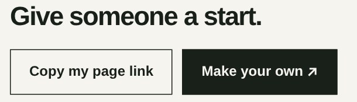
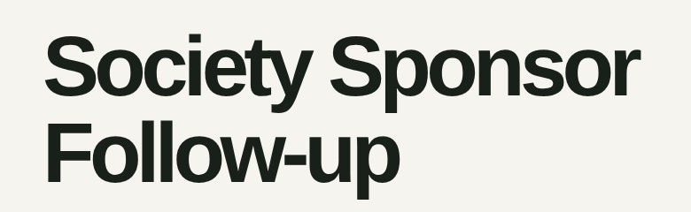
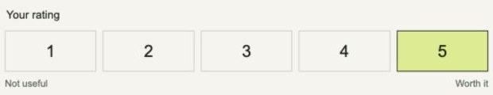
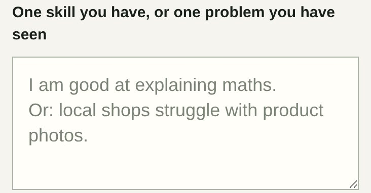
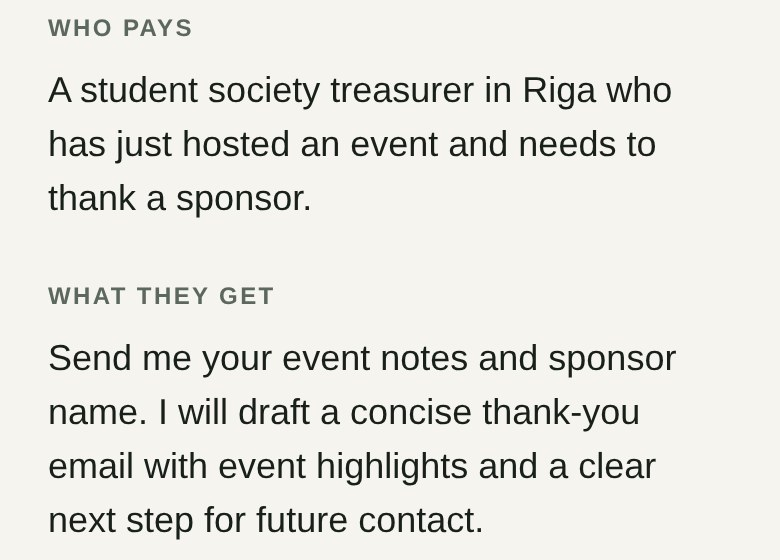

The lesson · 13 October 2026
Businesses that run while you sleep.
The lecture on one page. Read it in ten minutes, then design your first loop with AI.
1 · Task or loop
A task ends. A loop takes the next order without you.
Most people use AI for tasks: you ask, it answers, you start again. A business needs loops: the next order comes in, and the same steps run again, checked, without you.
2 · Three loops
A business is three loops: Grow, Serve, Improve.
Grow brings the next customer. Serve does the work. Improve makes the next run better. Point at a ring to read it.

Every result brings the next customer.
Every page the lecture demo made ends with “Make your own”. Each user can bring the next one.

Order → Make → Check → Deliver
A student types one skill or one problem. Under a minute later, a checked startup page is live.

Ratings → test one change → keep it only if better.
Old and new versions run on the same examples. A separate grader decides. If the new one is not better, the old one stays.
Your first prototype needs only the Serve loop.
AI agent = a model + tools + a goal, working in a loop.
3 · One loop up close
Order, make, check, deliver. And when it fails.
Step through one loop. Order, Make and Deliver show real screens from the lecture demo, the 60-Second Startup.

1 · Order
Something starts the loop: a form, an email, a new row in a sheet, or a schedule. Here, a student types one skill or one problem on a phone.
Ask yourself: what starts my loop?

2 · Make
AI does the parts that need judgment: the offer, who pays, what they get. Fixed rules do the rest, like the layout and the price format.
Ask yourself: which steps need AI, and which can use fixed rules?
3 · Check
Before anyone sees the result, a separate check reads it. The maker does not grade its own work. In the demo, the checker stops jokes, unsafe text and false claims.
How to build it: send the result and a short checklist to a second AI call. It answers PASS or FAIL with one reason. Only PASS is delivered.
Ask yourself: how does my loop check a result before it is delivered?

4 · Deliver
The user gets the result: here, a live page with its own link. The loop writes down what happened and waits for the next order.
Ask yourself: where does the result go, and what gets recorded?
When it fails
A failed check never ships quietly. The loop retries once, stops safely, or asks you. Missing input gets a clear question back, not a guess.
Ask yourself: what happens when input is missing or a step fails?
4 · You stay in control
AI does the routine. You own the goal, the limits and the exceptions.
Goal, limits, final say.
See results, cost and errors. Approve. Stop.
Grow · Serve · Improve
AI models, forms, data, a log. Runs on events or a schedule.
Goals and limits go down from you to the tools. Results and questions come up to you.
Your control panel
Five numbers worth showing
Checked results delivered, out of all valid requests. Failed ones stay in the count.
Results delivered with no human step, out of all valid requests.
Time spent running, approving and fixing. Approvals and avoidable work counted apart.
All running costs, failed tries included, per good result. Mark estimates as estimates.
One measure of what the user got: used it, saved time, came back, rated it.
Limits live in the system, not only in the prompt. They must hold even when the model makes a mistake.
Stop means no new actions. A sent email or a payment cannot be undone, so those steps need an approval.
5 · Become AI native
If you don't know, ask AI. Then check what it says.
A business idea is not enough. Show what you can launch.
- Describe the goal and where you are now.
- Ask for the next smallest step.
- Do it.
- Show AI the result, or the error.
- Check what really changed.
Ask it to explain every new word, to plan before it builds, and to criticise your idea. An explanation from AI is not proof that something works. A test is.
Danielius built the lecture's live demo in one weekend by directing AI agents, with no hand-written code. Four weeks of daily practice can change what you are able to build.
Your plan for the next weeks →6 · Your turn
Design your first autonomous loop.
In class: 8 minutes, in pairs or threes. At home: 15 minutes on your own. Any AI chat works, Gemini too. Nothing on this page is sent or stored online.
Pick a user
Open your 60-Second Startup page, or pick one real user and one small problem.
Paste the prompt
Copy the prompt below into your AI chat. Fill in your idea.
Find the hidden human
Find one step where the AI hides human work, like “get customers”, “check quality” or “send it”. Ask it to make that step explicit.
Act as my practical systems-design tutor. I am a business student with little experience building software. My idea: [paste your startup page, or write one sentence: user + problem + service]. Design the smallest repeatable loop that serves this user without me doing the work each time. Ask at most two short questions; otherwise state your assumptions. No business plan, and no list of tools first. In plain words: 1. What starts it? 2. What are the steps from request to delivered result? 3. Which steps need AI, and which can use fixed rules? 4. How does it check the result before delivery? 5. What happens when input is missing or a step fails? 6. What must a human approve, and how can they stop it? 7. What feedback changes the next run? 8. What is the first small test? Give a simple arrow chain. Mark untested assumptions. Do not claim anything is already built.
What good looks like
Example: six lines for one small service
Made up for teaching, based on one page the lecture demo produced.
- User and value
- A student society treasurer gets a ready thank-you email for a sponsor within a day after an event.
- Trigger and loop
- A form with event notes and the sponsor's name → AI drafts the email → check → the draft goes to the treasurer → the request is logged.
- Check
- A second step compares the draft with the notes: names, numbers and dates must match. Fixed rules check the length, and that no money or promise is invented.
- Human control
- The treasurer approves every email before it reaches the sponsor. A simple panel shows requests, cost and errors, and has a pause switch.
- Feedback
- The treasurer rates each draft from 1 to 5. After 10 ratings, test one change to the instructions on the same 10 examples.
- First test
- Five real event notes from two societies. Save the input, the draft, the check result and the rating.
Now yours
Write your six lines
Use them in the n8n workshop and on Thursday, when teams form. Your draft stays only in this browser. Copy it when you are done.
After class
Four more prompts
Plan the first working version
Use our loop specification. Break the first working version into small testable steps. For each step, name the input, action, expected output and evidence that it works. Separate building the system from running it repeatedly. Start with the simplest version; do not add agents just to make it look sophisticated.
When something does not work
Expected behavior: [what should happen]. Actual behavior: [what happened]. Relevant error or output: [paste it, with secrets removed]. Do not guess that the problem is fixed. Give the most likely cause, one safe diagnostic step, and the observation that would confirm or reject it. Explain unfamiliar terms briefly.
Write the check for your loop
Help me write the check for my loop. The user and what they get: [one sentence]. One example of a good result: [paste it]. One example of a bad result: [paste it]. Write 5 to 7 yes-or-no questions that a second AI step can answer about every result before it is delivered. Each question must be checkable from the input and the result alone. Then write the instruction for the checker: answer PASS or FAIL, with one short reason. Finally, give me three test inputs that should FAIL.
Check how autonomous it really is
Audit this workflow. List every place where a human still has to copy, click, approve, repair or deliver something. Separate intentional safety approvals from avoidable manual execution. For each gap, suggest one small change and a test. Do not call a design or a simulated run a deployed autonomous service.
7 · Build it
From a design to a running loop, in five steps
Each step proves one of the six things the challenge asks for.
- Do it by hand once
Serve one real user yourself, step by step. Save the input and the result. Now you know what “done” means.
Proves: a real user - Automate the Serve loop
Trigger → AI step → check → deliver. Build it in n8n, or with Codex or Claude Code. Test with made-up data first.
Proves: it runs without you, it checks first - Add a log and a stop
Every request gets one row: input, result, check, time, cost. Add a pause switch. A spreadsheet is enough to start.
Proves: you stay in control - Break it on purpose
Send missing input, a bad answer, the same request twice. The loop must retry, stop safely or ask you, and never send twice.
Proves: it handles failure - Run it for real users
Let it run for a week. Count your minutes. Change one thing from feedback, and test old and new on the same examples.
Proves: it learns
A first loop in n8n
Six nodes. One request in, one checked result out.
The user fills a form. That starts the loop.
An OpenAI or AI Agent node drafts the result from the form.
Gets the result and your checklist. Answers PASS or FAIL, with a reason.
PASS goes on. FAIL tries once more, then emails you.
Sends the checked result to the user.
One row per request: time, input, result, check, reason. Your first control panel.
Add an error workflow with the Error Trigger node, so a crash sends you a message instead of failing silently. How ↗
8 · Tools
Learn. Build. Run.
What matters is the job each tool does, not a long list of brands.
Any AI chat
ChatGPT, Claude or Gemini. Ask it to explain, plan and criticise. It is a tutor, not yet a running system.
Cost: all three have free plans to start.
Codex or Claude Code
AI agents that write, run and fix code with you. You describe the goal; they build, and you check.
Cost: Codex comes with paid ChatGPT plans. Claude Code needs a paid Claude plan.
n8n, or another tool
Runs your loop on an event or a schedule, so it keeps going after you close the laptop. Start with Dmitrijs's n8n workshop on 13 October.
Cost: n8n has a free trial in the cloud, or runs free on your own computer.
Before you call it autonomous, ask: Does it stop when I close my laptop? Where is the data kept? What happens when a limit or a budget runs out?